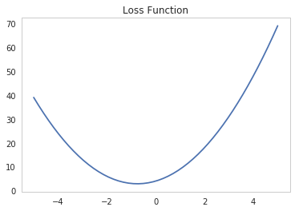
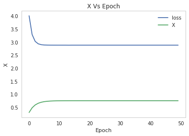

Training A Non-Neural Net Model
Imports
This is the tensorflow style guide recommendation to make the code backwards-compatible with python 2.7. I don't think it makes sense here, since I don't use python 0 and python 2 is nearing the for-real-this-time end-of-life date (sometime in 2010) so I don't think I will, but I guess it's a safer practice. Oh, well.
from __future__ import absolute_import
from __future__ import division
from __future__ import print_function
# python standard library
import os
# from pypi
import tensorflow
import matplotlib.pyplot as pyplot
import numpy
import seaborn
% matplotlib inline
seaborn.set()
seaborn.set_style("whitegrid", {"axes.grid": False})
A Polynomial Loss Model
We're going to build a model using a polynomial loss function. Here's what it looks like.
x = numpy.linspace(-5, 5)
y = 2*x**2 + 3*x + 4
figure = pyplot.figure()
axe = figure.gca()
axe.set_title("Loss Function")
plot = pyplot.plot(x, y)

Setup
The first thing we will do is setup some variables for the training. The tensorflow.Variable is a tensor (but not a tensorflow.Tensor) whose values can be updated. It maintains its value in between Sessions so if you run multiple sessions the value wil carry over to each run. Its constructor takes these arguments.
| Argument | Description | Default |
|---|---|---|
initial_value |
Tensor that represents the starting value | None |
trainable |
If True, added to the collection of variables used by the Optimizers | True |
collections |
List of graph collection keys that the variable gets added to | None |
validate_shape |
If True, the shape of initial_value must be known |
True |
caching_device |
Device string describing where to cache the Variable | None |
name |
Name for the variable | Variable + unique string |
variable_def |
Protocol buffer to use to recreate a variable | None |
dtype |
If set, the initial_value will be converted to it |
None |
expected_shape |
If set, initial_value should have this shape |
None |
import_scope |
Name scope to add if initializing from a protocol buffer | None |
constraint |
Optional function to apply after being updated by an Optimizer | None |
First we'll make a trainable variable with an initial value of 0. This is what we'll give to the loss function.
Variables
x_variable = tensorflow.Variable(0., name='X')
Next we'll make an un-trainable variable that holds the count of the number of times the model was trained..
step_counter = tensorflow.Variable(0, trainable=False, name="stepCounter")
Loss Function
We're going to use the same polynomial that I plotted above but defined using TensorFlow instead of numpy.
# Express loss in terms of the variable
loss = 2 * x_variable * x_variable - 3.0 * x_variable + 4.0
The Optimizer
TensorFlow uses optimizers to train the model. In this case we know there's only one solution to minimize our loss function so we can use Stochastic Gradient Descent which is provided by tensorflow.training.GradientDescentOptimizer. It takes three arguments.
| Argument | Description |
|---|---|
| learningrate | How 'fast' it updates its values |
| uselocking | If True uses locks when updating |
| name | An identifier for debugging |
learning_rate = 0.1
optimizer = tensorflow.train.GradientDescentOptimizer(learning_rate, name="GradientDescent")
After we define the object we have to call the minimize function that returns a tensorflow.Operation that will update the variable and update our step-counter everytime it's called.
optimizer_operation = optimizer.minimize(loss, global_step=step_counter)
Setup the training session
First we have to initialize the variables. There are several ways to do this, the simplest is tensorflow.global_variables_initializer. This will return a tensorflow.Operation that will initialize the variables when passed to the session to run.
init = tensorflow.global_variables_initializer()
We want the variables to be persistent so we start up the tensorflow.train.Saver.
saver = tensorflow.train.Saver()
We also want a summary and some logging so we can set that up here. First the summary.
summary_operation = tensorflow.summary.scalar('x', x_variable)
file_writer = tensorflow.summary.FileWriter('log', graph=tensorflow.get_default_graph())
Now the logging.
tensorflow.logging.set_verbosity(tensorflow.logging.INFO)
Finally we get to the training session. We're going to re-train it 50 times (each training run is called an epoch).
epochs = range(50)
results = []
losses = []
with tensorflow.Session() as session:
session.run(init)
for epoch in epochs:
_, step, result, loss_value, summary = session.run([
optimizer_operation,
step_counter,
x_variable, loss,
summary_operation])
results.append(result)
losses.append(loss_value)
tensorflow.logging.log_every_n(tensorflow.logging.INFO,
'Step %d: Computed result = %f Loss: %f',
10,
step,
result, loss_value)
file_writer.add_summary(summary, global_step=step)
file_writer.flush()
saver.save(session, os.getcwd() + '/output')
tensorflow.logging.info('Final X: %f', session.run(x_variable))
As you can see from the output, the result was reached fairly quickly.
figure = pyplot.figure()
axe = figure.gca()
axe.set_title("X Vs Epoch")
axe.set_ylabel("X")
axe.set_xlabel("Epoch")
axe.plot(losses, label="loss")
plot = axe.plot(results, label="X")
legend = axe.legend()

Judging by the plot it reaches the minimum loss after less than 10 epochs.